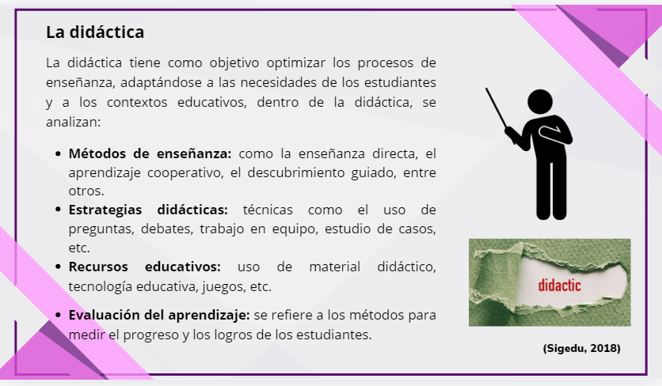
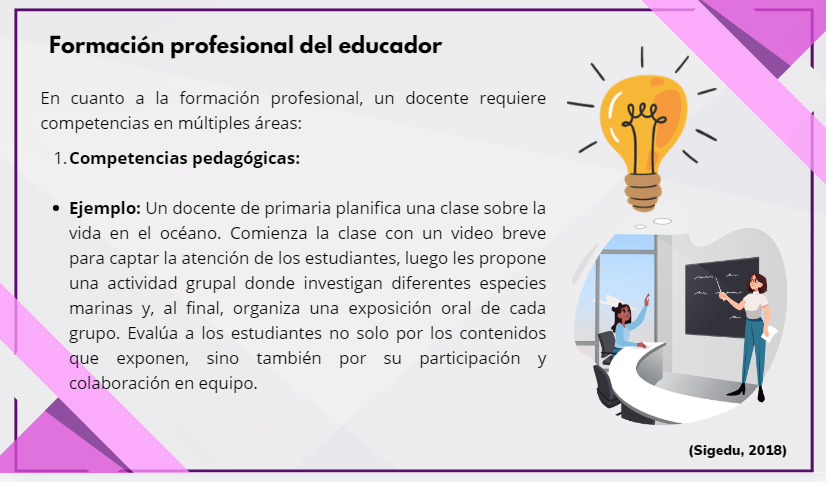
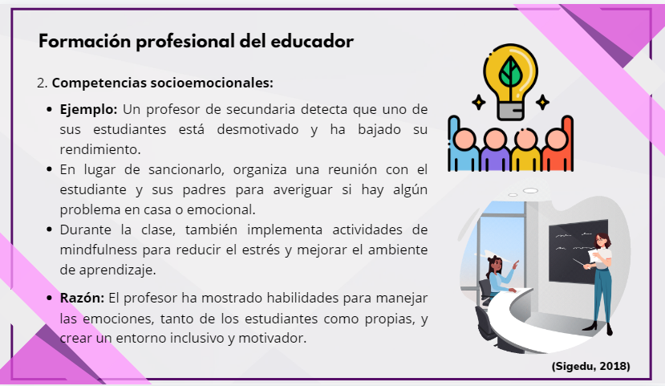
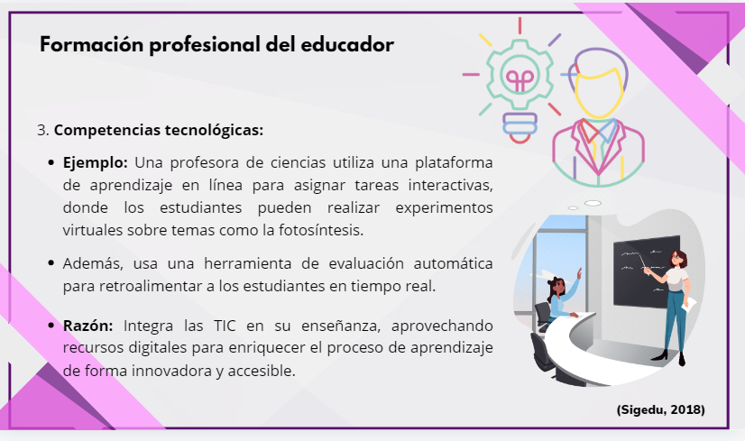

ELEMENTOS DIDÁCTICOS
01. EL ALUMNO
Es el eje central de la educación; su aprendizaje es lo más importante en el proceso pedagógico.
02. EL PROFESOR
Actúa como guía, facilitador y asesor, apoyando a los estudiantes en su aprendizaje y actuando como mediador en el proceso educativo.
03. LOS OBJETIVOS
Dirigen el proceso educativo y pueden ser generales o específicos según el contexto educativo, el nivel o la materia.
04. CONTENIDOS
Incluyen conceptos, procedimientos y actitudes, esenciales para la transmisión del conocimiento y formación integral del estudiante.
05. MÉTODOS Y TÉCNICAS
Facilitan la participación activa de los estudiantes, permitiéndoles ser protagonistas de su propio proceso de aprendizaje.
06. EL MEDIO
Es fundamental considerar el entorno en el que se lleva a cabo la enseñanza para asegurar la efectividad del proceso educativo.
Diegoutm. (2010)


